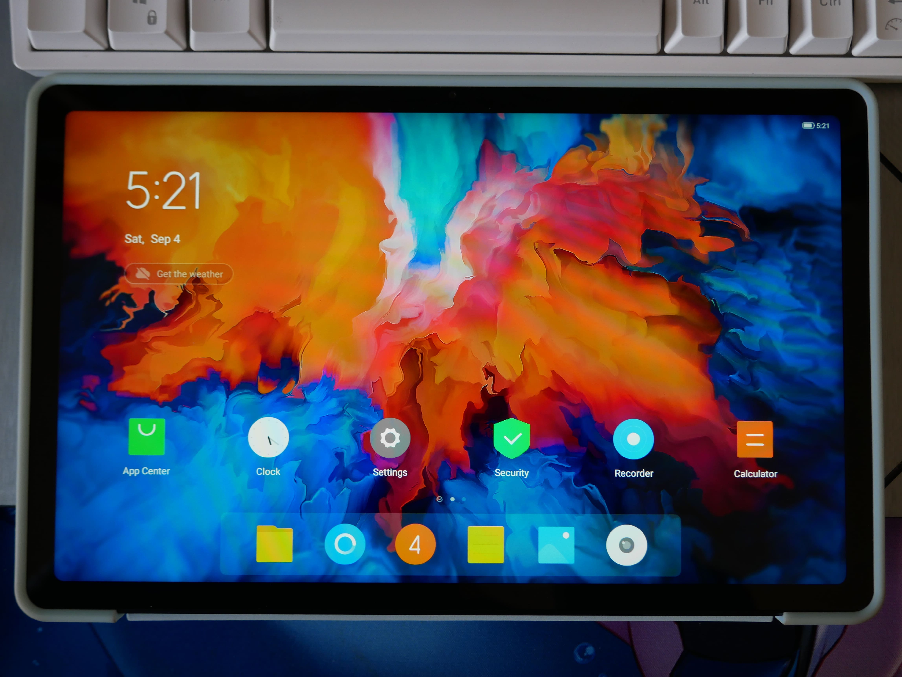

Lenovo Tab P11 (lenovo-tbj606f)
|
 Lenovo Tab P11 | |
| Manufacturer | Lenovo |
|---|---|
| Name | Tab P11 |
| Codename | lenovo-tbj606f |
| Released | 2020 |
| Category | testing |
| Original software | Android 10 |
| Hardware | |
| Chipset | Qualcomm Snapdragon 662 (SM6115) |
| CPU | 4x2.3 GHz Kryo 260 Gold + 4x1.8 GHz Kryo 260 Silver |
| GPU | Adreno 610 |
| Display | 1200 x 2000 |
| Storage | 64/128GB |
| Memory | 4/6GB |
| Architecture | aarch64 |
{kind=link}
Status: kernel compiles, doesn't boot
| USB Networking | |
|---|---|
| Flashing | |
| Touchscreen | |
| Display | |
| WiFi | |
| FDE | |
| Mainline | |
| Battery | |
| 3D Acceleration | |
| Audio | |
| Bluetooth | |
| Camera | |
| GPS | |
| Mobile data | |
| SMS | |
| Calls | |
| USB OTG | |
| NFC | |
| Accelerometer | |
|---|---|
| Magnetometer | |
| Ambient Light | |
| Proximity | |
| Hall Effect | |
| Barometer | |
| Power Sensor | |
| Camera Flash | |
|---|---|
| Keyboard | |
| Touchpad | |
| USB-A | |
| HDMI/DP | |
| Ir TX | |
| Ir RX | |
| Stylus | |
| Haptics | |
| Ethernet | |
| FOSS bootloader | |
Contents
Contributors
- MollySophia
Users owning this device
How to enter flash mode
Enter Fastboot
- Power off the device, press POWER and VOL-, and release POWER key after a vibration, it should enter bootloader mode.
- Use volume key to select 'Recovery Mode', then select 'Enter fastboot', which starts user-space fastbootd.
- Alternatively, you can also use 'adb reboot fastboot'
Enter EDL Mode
- Power off the device, press VOL+ and connect to the computer with usb cable.
Unlocking the bootloader
| Note: You have to wait at least 8 hours after initially connecting to the Internet for Lenovo to process your serial number. |
- Go to Settings → My Device, tap on ZUI Version until developer settings are enabled.
- Go to General Settings → Developer Settings and enable "OEM Unlocking".
- Boot into fastboot mode and connect it to a PC
- Take note of the serial number shown on the bootloader screen.
- Download your
sn.imgfrom http://cdn.zui.lenovomm.com/developer/tabletboot/(your_sn_number)/sn.img (Replace the brackets with your number in the link) - Flash your
sn.imgwithfastboot flash unlock sn.img. - Unlock the bootloader with
fastboot oem unlock-go
Alternatively this page can also be used to get the sn.img.
Notes
This device uses Qualcomm SM6115 chipset, which is almost the same as the SM4250 chipset OnePlus Nord N100 is using. Using stock kernel source from Lenovo website and the installation procedure OnePlus Nord N100 device page suggests, I got similar results with OnePlus Nord N100: USB Network and the vibrator are working, which indicates again that these two devices are fairly similar.
The vendor poorly released it's kernel. The kernel source code is older than the latest stock firmware (Android 10 : 0906, Android 11 has much later dated android builds and bootloader), and the kernel does not contain drivers for peripherals contained in later-built P11s, such as the touch screen driver for variants using the NovaTek touch panel. The kernel for android 11 is fully unreleased, although it is unknown if Android 10's kernel also works with the bootloader of Android 11. (Not even sure if it can be reverted.) If possible, it might be easier to go to the mainline route, than requesting the code to Lenovo. (Lenovo refused to provide the code.)
Installation
/* Not yet */